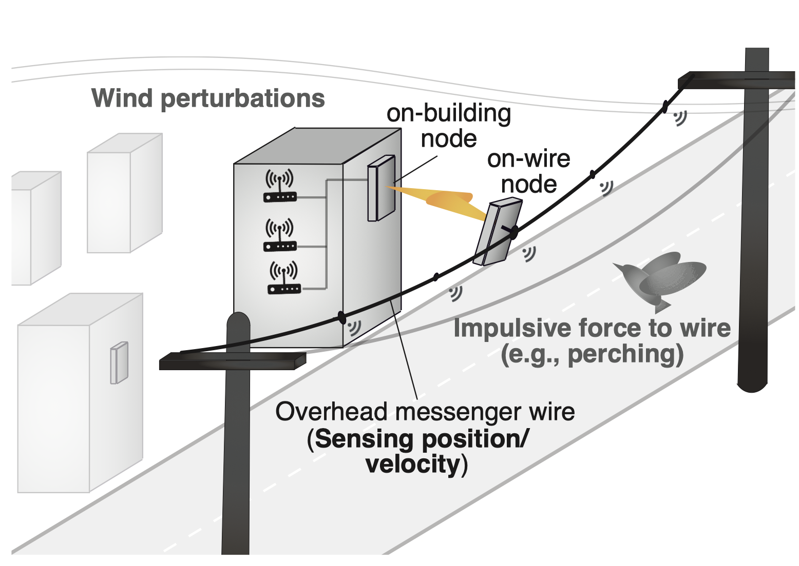

Visual data-driven proactive received power prediction via deep learning
Visual data-driven proactive handover management via deep reinforcement learning

Millimeter Wave on Overhead Messenger Wires (Collaborator: NTT Access Network Service Systems Laboratories)
Deep reinforcement learning-based predictive beam tracking
Zero-shot adaptation through robust adversarial reinforcement learning
Publications
Invited/Tutorial Talks
Y. Koda, "Over-the-Air Computation for Scalable, Lightweight, and Privacy Preserving Edge
Machine Learning," IEICE Society Conference 2021, BT-2, 分散協調機械学習 (Federated Learning) チュートリアル〜
IoTに向けたプライバシ保護と通信効率向上を目指して 〜
(URL for conference,
slides ).
Y. Koda, "Visual data-driven millimeter wave communication systems," Kyoto University,
Graduate School of Informatics, CCE colloquium（京都大学大学院情報学研究科通信情報システム専攻談話会）, Oct. 2021.
Journal Papers
Reviewed
T. Kanda, Y. Koda, K. Yamamoto, and T. Nishio, "ACK-Less Rate Adaptation Using
Distributional Reinforcement Learning for Reliable IEEE 802.11bc Broadcast WLANs," accepted to IEEE access.
Y. Kihira, K. Yamamoto, A. Taya, T. Nishio, Y. Koda, and Y. Kazuto, “Shared information
reduction for tabular Q-learning-based coordinated spatial reuse for WLANs,” accepted to IEICE
Communications Express.
Y. Kihira, Y. Koda, and K. Yamamoto, "Adversarial reinforcement learning-based coordinated
robust spatial reuse in broadcast-overlaid WLANs," conditionally accepted to IEICE Transactions on
Communications.
S. Kondo, S. Itahara, K. Yamashita, K. Yamamoto, Y. Koda, T. Nishio, and A. Taya,
"Bi-directional Beamforming Feedback-based Firmware-agnostic WiFi Sensing," IEEE Access, vol. 10, pp.
36924-36934, Apr. 2022.
.
K. Yamashita, S. Kamiya, K. Yamamoto, Y. Koda, T. Nishio, and M. Morikura, “Penalized and
decentralized contextual bandit learning for WLAN channel allocation with contention-driven feature
extraction,” IEICE Transactions on Communications, vol. E105-B, no.10, Oct. 2022.
S. Itahara, T. Nishio, Y. Koda, and K. Yamamoto, "Communication-oriented model fine-tuning
for packet-loss resilient distributed inference under highly lossy IoT networks," IEEE Access, vol. 10,
pp. 14969-14979, Feb. 2022
.
M. Shinzaki, Y. Koda(corresponding author), K. Yamamoto, T. Nishio, M. Morikura, Y.
Shirato, U. Daisei, and N. Kita, “Zero-shot adaptation for mmWave beam-tracking on overhead messenger
wires through robust adversarial reinforcement learning,” IEEE Transactions on Cognitive Communications
and Networking, vol. 1, no. 8, pp. 232-245, Mar. 2022.
T. Nishio, Y. Koda, J. Park, M. Bennis, and K. Doppler, “When wireless communications meet
computer vision in beyond 5G,” IEEE Communications Standards Magazine, vol. 5, no. 2, pp. 76-83, Jun.
2021.
(One of popular documents in IEEE CSM in
Jul.
,
Aug.
,
Sep.
,
Oct.
,
Nov.
,
Dec.
2021
, and
Jan.
2022)
Y. Koda, M. Shinzaki, K. Yamamoto, T. Nishio, M. Morikura, Y. Shirato, U. Daisei, and N.
Kita, “Millimeter wave communications on overhead messenger wire: Deep reinforcement learning-based
predictive beam tracking,” IEEE Transactions on Cognitive Communications and Networking, vol. 7, no. 4,
pp. 1216-1232, Dec. 2021.
(One of popular documents in IEEE TCCN in Dec. 2021)
.
S. Itahara, T. Nishio, Y. Koda, M. Morikura, and K. Yamamoto, “Distillation-based
semi-supervised federated learning for communication-efficient collaborative training with non-IID private
data,” IEEE Transactions on Mobile Computing, accepted, DOI: 10.1109/TMC.2021.3070013.
(IEEE Xplore
,
Arxiv:
)
Y. Fu, K. Yamamoto, Y. Koda, T. Nishio, M. Morikura, C. Huang, Y. Shirato, and N. Kita,
“Stochastic geometry analysis of wireless backhaul networks with beamforming in roadside environments,”
IEICE Transactions on Communications, vol. E104-B, no. 1, pp. 118-127, Jan. 2021.
Y. Koda, J. Park, M. Bennis, K. Yamamoto, T. Nishio, M. Morikura, and K. Nakashima,
“Communication-efficient multimodal split learning for mmWave received power prediction,” IEEE
Communications Letters, vol. 24, no. 6, pp. 1284-1288, Jun. 2020.
(IEEE Xplore,
;
Arxiv preprint: )
Y. Koda, K. Nakashima, K. Yamamoto, T. Nishio and M. Morikura, “Handover management for
mmWave
networks with proactive performance prediction using camera images and deep reinforcement learning,” IEEE
Transactions on Cognitive Communications and Networking, vol. 6, no. 2, pp. 802-816, Jun. 2020.
,
(One of popular documents in IEEE TCCN in
Jun.
,
Jul.
,
Aug.
,
Sep.
,
Oct.
, and
Nov.
in 2020;
Feb.
,
Apr.
,
May
, and
Oct
,
in 2021)
T. Nishio, H. Okamoto, K. Nakashima, Y. Koda, K. Yamamoto, M. Morikura, Y. Asai, and R.
Miyatake,
“Proactive received power prediction using machine learning and depth images for mmWave networks,” IEEE
Journal on Selected Areas in Communications, vol. 37, no. 11, pp. 2413-2427, Nov. 2019.
(One of popular documents in IEEE JSAC in
Nov. 2019.)
Y. Koda, K. Yamamoto, T. Nishio and M. Morikura, “Measurement method of temporal
attenuation by
human body in off-the-thelf 60GHz WLAN with HMM-based transmission state estimation,” Wireless
Communications and Mobile Computing, vol. 2018, atricle ID 7846936, pp. 1-9, Apr. 2018,
doi:10.1155/2018/7846936.
Preprints under submission
T. AlShammari, Y. Koda, A. Elgabli, S. Samarakoon, and M. Bennis, "BayGO: Joint Bayesian
federated learning and information-aware graph optimization framework," (Submitted to IEEE Journal on
Selected Areas in Information Theory).
T. Sunami, S. Itahara, Y. Koda, T. Nishio, and K. Yamamoto, "Computer vision-assisted
decimeter-level single-antenna RSSI localization harnessing dynamic blockage events," (Submitted to IEEE
IoT Journal).
Y. Koda, J. Park, M. Bennis, K. Yamamoto, T. Nishio, and M. Morikura, “Distributed
heteromodal split learning for vision aided mmWave received power prediction,” arXiv preprint
arXiv:2007.08208, Jul. 2020 (Submitted to IEEE Transactions on Cognitive Communications and Networking).
S. Itahara, S. Kondo, K. Yamashita, K. Yamamoto, T. Nishio, and Y. Koda, "Beamforming
Feedback-based Model-Driven Angle of Departure Estimation Toward Legacy Support in WiFi Sensing: An
Experimental Study,"
(Submitted to IEEE access).
under preparation: 2
International Conference (reviewed)
Reviewed
T. Kanda, Y. Koda, K. Yamamoto, and T. Nishio, “ACK-less rate adaptation for IEEE 802.11bc
enhanced broadcast services using sim-to-real deep reinforcement learning
,” in Proc. IEEE CCNC 2022, held online, Jan. 2022.
R. Hanahara, K. Yamashita, S. Itahara, Y. Koda, A. Taya, T. Nishio, and K. Yamamoto,
“Frame-capture-based CSI recomposition pertaining to firmware-agnostic WiFi sensing,” in Proc. IEEE CCNC
2022, held online, Jan. 2022.
Y. Koda, J. Park, M. Bennis, P. Vepakomma, and R. Raskar, “AirMixML: Over-the-air data mixup
for inherently privacy-preserving edge machine learning,” in Proc. IEEE GLOBECOM 2021, Spain, Madrid, Dec.
2021, pp.1-6.
Y. Koda, K. Yamamoto, T. Nishio, and M. Morikura, “Differentially private airComp
federated
learning with power adaptation harnessing receiver noise,” in Proc. IEEE GLOBECOM 2020, Taipei, Taiwan,
Dec. 2020, pp.1-6.
M. Shinzaki, Y. Koda, K. Yamamoto, T. Nishio, M. Morikura, C. H. Huang, Y. Shirato, and N.
Kita,
“Deep reinforcement learning-based beam tracking from mmWave antennas installed on overhead messenger
wires,” in Proc. IEEE VTC2020-fall, Victoria, Canada, Oct. 2020, pp. 1-5.
Y. Kihira, Y. Koda, K. Yamamoto, T. Nishio, and M. Morikura, “Adversarial reinforcement
learning-based robust access point coordination against uncoordinated interference,” in Proc. IEEE
VTC2020-fall, Victoria, Canada, Oct. 2020, pp. 1-5. (IEEE Xplore:
Y. Koda, K. Nakashima, K. Yamamoto, T. Nishio, and M. Morikura, “Cooperative sensing in
deep
RL-based
image-to-decision proactive handover for mmWave networks,” in Proc. IEEE CCNC, Las Vegas, USA,
Jan. 2020.
M. Shinzaki, Y. Koda, K. Yamamoto, T. Nishio, and M. Morikura, “Reducing transmission
delay in
EDCA using policy gradient reinforcement learning,” in Proc. IEEE CCNC, Las Vegas, USA,
Jan. 2020.
Y. Koda, J. Park, M. Bennis, K. Yamamoto, T. Nishio, and M. Morikura, “One pixel image and
RF
signal based split learning for mmWave
received power prediction,” in Proc. ACM CoNEXT2019 poster, Orlando, FL, USA, Dec. 2019.
K. Nakashima, Y. Koda, K. Yamamoto, H. Okamoto, T. Nishio, and M. Morikura, Y. Asai and R.
Miyatake, “Impact of input data size on received power prediction using depth images for mmWave
communications,” in Proc. IEEE VTC2018-Fall, Chicago, USA, Aug. 2018.
Y. Koda, K. Yamamoto, T. Nishio, and M. Morikura, “Reinforcement learning based predictive
handover for pedestrian-aware mmWave networks,” in Proc. IEEE INFOCOM Workshops, Waikiki, USA, Apr. 2018.
(One of popular documents in IEEE INFOCOM Wksps in
Feb.
and
Mar.
2020.)
Y. Koda, K. Yamamoto, T. Nishio, and M. Morikura, “Time series measurement of IEEE
802.11ad
signal power involving human blockage with HMM-based state estimation,” in Proc. IEEE VTC2017-Fall,
Toronto, Canada, Sep. 2017.
Y. Koda, Y. Oguma, T. Nishio, K. Yamamoto and M. Morikura, “Statistical prediction of
human
blockage for camera-assisted mmWave communications,” in Proc. IEEE APWCS 2016, Tokyo, Japan, Aug. 2016.
under preparation: 1
Ph.D. Dissertation
Yusuke Koda, "Visual data-driven millimeter wave communication
systems," Mar. 2021.
Misc (not reviewed)
Takanori Hara, Hiroki Iwata, Hiroshi Katada, Yusuke Koda, “Young researchers'
participation
report for the 2019 cross-field research association of super-intelligent
networking (RISING 2019) ,” IEICE Communications Society GLOBAL NEWSLETTER, Vol. 44, No. 1, pp. 12-13,
Mar. 2020.
Awards and Grants
Awards
For me
Outstanding Paper Award for Young C&C Researchers, 2021.
（2021年度C&C若手優秀論文賞）
The Telecommunications Advancement Foundation, The 36th Telecom System Students Award, 2020.
（第36回電気通信普及財団賞 テレコムシステム技術学生賞）
The Institute of Electronics, Information and Communication Engineers, Young Researcher's Encouragement
Award.
（第83回 電子情報通信学会学術奨励賞）
IEEE Kansai Chapter Student Research Encouragement Award.
（第17回 IEEE関西支部学生研究奨励賞）
The Telecommunications Advancement Foundation, The 35th Telecom System Award, 2019.
（第35回電気通信普及財団賞 テレコムシステム技術賞）
Cross-field Research Association of Super-Intelligent Networking (RISING 2019), Best Poster Presentation
Award.
（超知性ネットワーキングに関する分野横断型研究会 優秀ポスター発表賞）
IEEE VTS Tokyo Chapter 2017 Young Researcher’s Encouragement Award.
（IEEE VTS Tokyo Chapter 学生奨励賞 2017）
For co-authors
The Telecommunications Advancement Foundation, The 37th Telecom System Students Award, 2021 to Sohei
Itahara.
（第37回電気通信普及財団賞 テレコムシステム技術学生賞、板原壮平）
IEEE Kansai Chapter Student Research Encouragement Award, to Sohei Itahara.
（第18回 IEEE関西支部学生研究奨励賞、板原壮平）
IEEE VTS Tokyo Chapter 2020 Young Researcher's Encouragement Award, to Masao Shinzaki.
（IEEE VTS Tokyo Chapter 学生奨励賞 2020、新﨑聖峰）
IEEE VTS Tokyo Chapter 2020 Young Researcher's Encouragement Award, to Yuto Kihira.
（IEEE VTS Tokyo Chapter 学生奨励賞 2020、紀平悠人）
IEEE VTS Tokyo Chapter 2018 Young Researcher's Encouragement Award, to Kota Nakashima.
（IEEE VTS Tokyo Chapter 学生奨励賞 2018、中島功太）
Grants
Japan society for the promotion of science (JSPS), Overseas Research Fellowship, accepted (JPY
6200000/year for 2 years).
（日本学術振興会 海外特別研究員 採用内定 620万円/年 2年）
C&C public interest incorporated foundation, International conference travel grant (JPY 64000).
（公益財団法人NEC C&C財団 国際会議論文発表者助成 6万4千円）
Nokia Foundation Centennial Scholarship (€6 000).
Research project titled as “Camera-assisted Framework for
Reliable, Decentralized, and Ultra-Dense Millimeter Wave Networks,” Jun. 2019
.
Kyoto University, Graduate School of Informatics, Ph.D. student encouragement project for traveling
overseas (JPY 500000).
（京都大学大学院情報学研究科博士後期過程に対する支援事業 海外渡航支援、50万円）
Japan Student Services Organization (JASSO) Scholorship, Exemption from Refund (JPY 500000).
日本学生支援機構第一種奨学金返還免除（50万円）
Academic Activities
Program Committee Member
IEEE VTC2022-spring, Track10: Signal processing for wireless communications